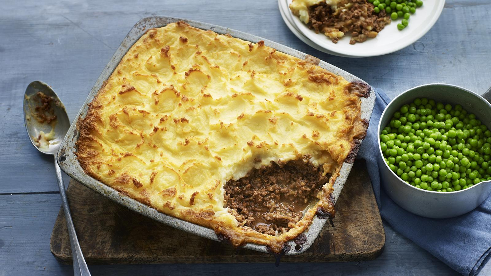

Home
Cottage Pie

Description
This recipe can be made up to 2 days in advance and stored in the fridge well wrapped in cling film or kitchen foil.
To reheat in the oven, cover the top with kitchen foil (to prevent it drying out) and preheat the oven to 180C/160C Fan/Gas 4.
Cook for about 40 minutes for a whole pie (or about 15 minutes for smaller portions) or until it’s piping hot in the middle.
This cottage pie is also a great recipe for batch cooking. Freeze cottage pie on the day you make it and store for up to 3 months
(either whole or in portions – or just make the meat filling in advance, which saves you keeping a big dish in your freezer).
To reheat from frozen, sprinkle a little water on top, cover with kitchen foil and cook at 180C/160C Fan/Gas 4 for about
1 hour 15 minutes for a whole pie or 30 minutes for smaller portions, until piping hot in the middle.
Ingredients
For the cottage pie filling
- 50ml olive oil
- 1 large onion or 3-4 banana shallots, finely chopped
- 650g beef mince
- 2 tbsp tomato puree
- 1 tbsp plain flour
- 150ml red wine
- 4 sprigs fresh thyme, leaves only
- 400ml beef stock
- Worcestershire sauce, to taste
- Salt and freshly ground black pepper
For the mash
- 900g King Edward potatoes, peeled and chopped
- 115g butter
- 125ml milk
To serve
- 150g frozen peas
- 50g butter
Steps
-
Heat half oil in a large heavy-based pan. Add the onion and cook until
softened. Tip it onto a plate.
-
Return the pan to the heat and add the remaining oil. When it's hot, fry the mince,
in batches if needed, for 4-5 minutes, or until browned all over.
-
Stir in the cooked onion and tomato puree and cook for 1 minute. Stir in the
flour and cook for a further minute. Pour in the red wine, scraping up any
caramelised bits with a wooden spoon, add add the thyme.
-
Add the stock and simmer for 45 minutes, or until the mince is tender and
the mixture has thickened. Season to taste, and add a few dashes of Worcestershire
sauce. Keep warm over a very low heat.
-
Meanwhile, for the mash, put the potatoes in a pan of salted water and bring to the boil. Reduce the heat and simmer for 12–15 minutes, or until they are tender.
-
Drain and return the potatoes to the pan, then place over the heat for about 1 minute to drive off any excess moisture. Mash well, then add the butter and milk, beating to form a smooth mash. Season to taste.
-
Preheat the grill to high. Put the cottage pie filling in a baking dish and spoon the mash over the top. Grill for 8–10 minutes, or until golden-brown.
-
Meanwhile, boil the peas in boiling water in a small saucepan for 3–4 minutes, then drain and add the butter. Serve the cottage pie with the peas.